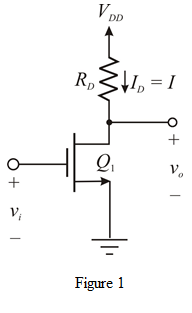
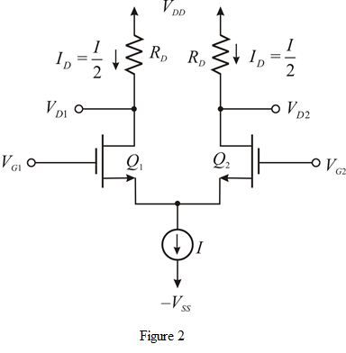

Draw the common-source (CS) amplifier is shown in Figure 1:

From Figure 1, the drain current for CS amplifier is,
The differential voltage gain for CS amplifier is,
.
Draw The MOS differential amplifier is shown in Figure 2:

From Figure 2, the drain current for differential amplifier is,
The differential voltage gain for differential amplifier is,
.
Therefore, the differential amplifier requires twice bias current compared to CS amplifier.
The power dissipation of the differential amplifier is also high, because the bias current is twice the drain current.